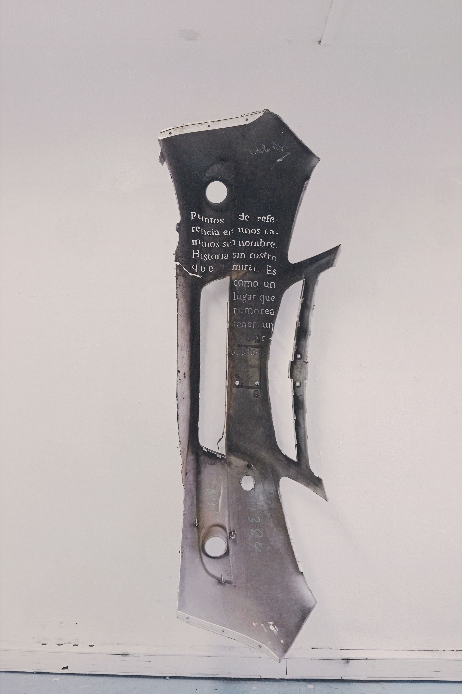

1. "Calor urbano, mira donde nos lleva".
2. "Nada que divida al paisaje resistirá al paisaje".
3. "Tajo rural que separa la población de la industría".

"Ya no queda (nadie) que lo haya vivido".

Tronado por el movimiento de los años, me pregunto qué habrá pasado. Un hoyo que proteja del frio, un techo que proteja de la interperie.

Puntos de referencia en unos caminos sin nombre. Historia sin rostro que mirar. Es como un lugar que rumorea tener un tesoro.
Titulo: "treasure map: linea de tren (Quilicura)"
Medeio: Instalación
Material: Objeto
encontrado
Año: 2023